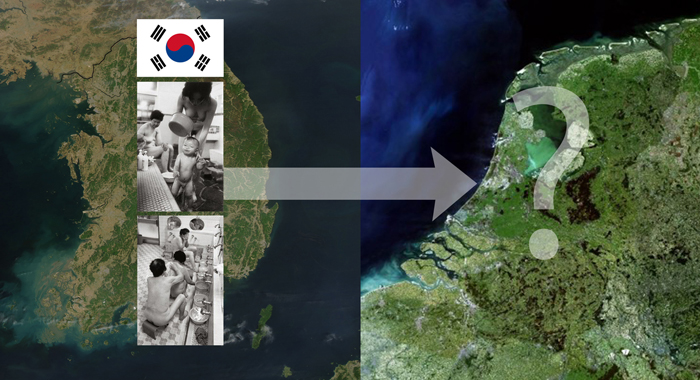
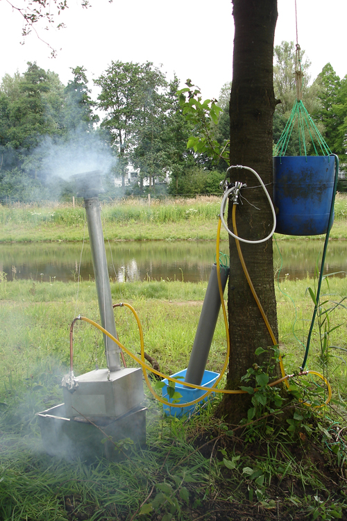
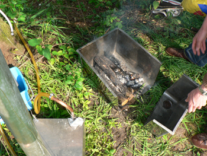
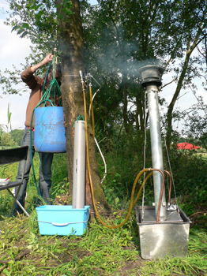
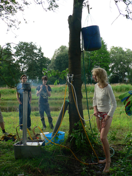

Guilt Free Shower
The assignment for this project was to talk to a foreign student and import one of the rituals from his country into Eindhoven.
I spoke to a South Korean student who told me about how he used to go to the local bathouse every weekend.
Now I did not believe that you can just open a korean bathouse in the Netherlands and hope it will work.
I needed a cultural anchor around wich I could translate the public bathhouse into the Dutch culture.
My interest turned to The Dutch taboo of luxuriously taking a shower for half an hour or more.
This is because we feel we waste precious drinking water.
But rainwater is free and plentifull here in the Netherlands so why not use this to have an occasional guilt free shower?
Collect rainwater in a watertank with a filter.
A shower needs water pressure so you pump up the water to a watertank above the shower.
The efford you put into handpumping the water up will be repaid in full when you enjoy the shower.
A fire is lit in a heat exchanger and the shower will now offer a wonderfull warm shower without wasting water because all the water you use is water that would have ended up in the garden anyway.
With an avarage rainfall of 65mm a month this gives you 65 liters of showering water per square meter of roof you have for collecting rainwater.
Assuming a flow of 5 liters of water per minute this gives you 13 minutes of guilt free showering time per square meter of rain collecting roof area per month, on avarage.
The presentation of this project would be with a 1:1 model, wich meant I needed to make a working model of the shower.
I hung a plastic barrel in a tree for the water pressure and made a heat exchanger of a second hand radiator in a metal box with a chimney.
In the end the water pressure was abominable but the shower did produce nicely warm water.
A big thank you to Petra for modeling for this photo shoot!
 
 